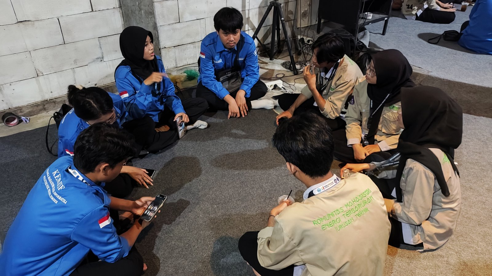
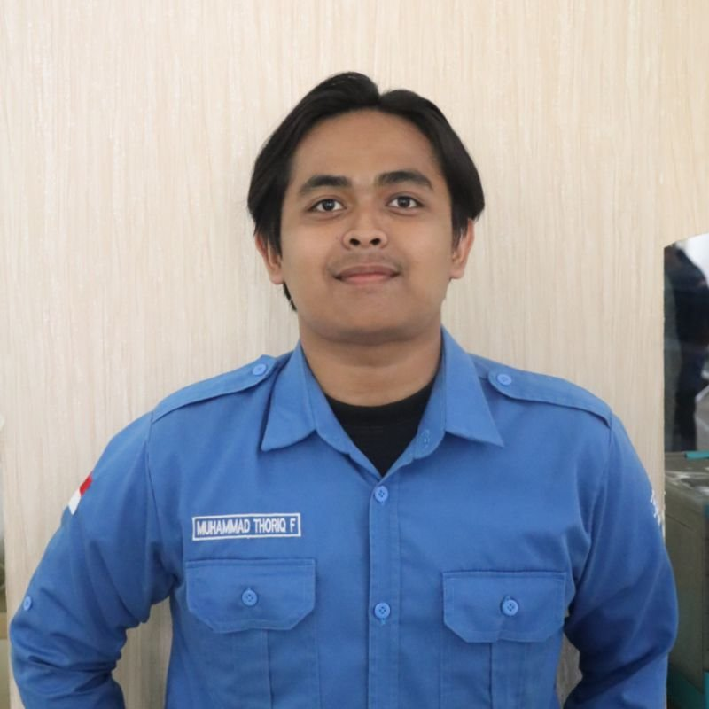

♧
Kolaborasi
Berbagai proyek dan kegiatan bersama untuk mencapai tujuan bersama dan memaksimalkan potensi.
KEMATIF menghimpun mahasiswa swadiri Program Studi Teknik Informatika Politeknik Negeri Jember untuk bertumbuh, berkolaborasi, dan berkarya bersama.


Berbagai proyek dan kegiatan bersama untuk mencapai tujuan bersama dan memaksimalkan potensi.
Pengembangan keterampilan kepemimpinan dan pengabdian dengan efektivitas.
Memfasilitasi interaksi dan dukungan antar anggota untuk membangun lingkungan yang inklusif dan kolaboratif.
Mendorong semangat serta dorongan untuk mencapai tujuan yang lebih tinggi.
Ikatan yang mengumpulkan seluruh mahasiswa Program Studi Teknik Informatika, mahasiswa aktif dan alumni, di bawah naungan Himpunan Mahasiswa Jurusan Teknologi Informasi Politeknik Negeri Jember.
Baca Selengkapnya →
Adelia Hanifah Saharani
Heriyansyah H. & Sukma Arum D. P.
Nur Azizah S. & Aninaya Zuhrah A.
Tata kelola organisasi
Hubungan internal & eksternal
Media dan publikasi
Usaha pendanaan anggota
Minat dan bakat mahasiswa
Kembangkan keterampilan, perluas relasi, tumbuh bersama mahasiswa Teknik Informatika.